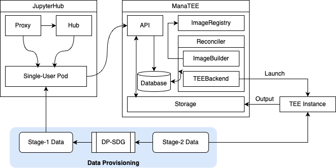
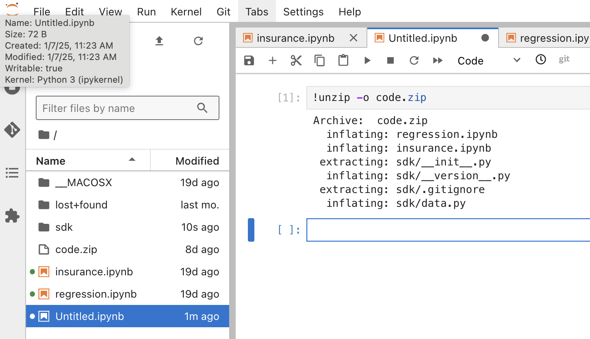
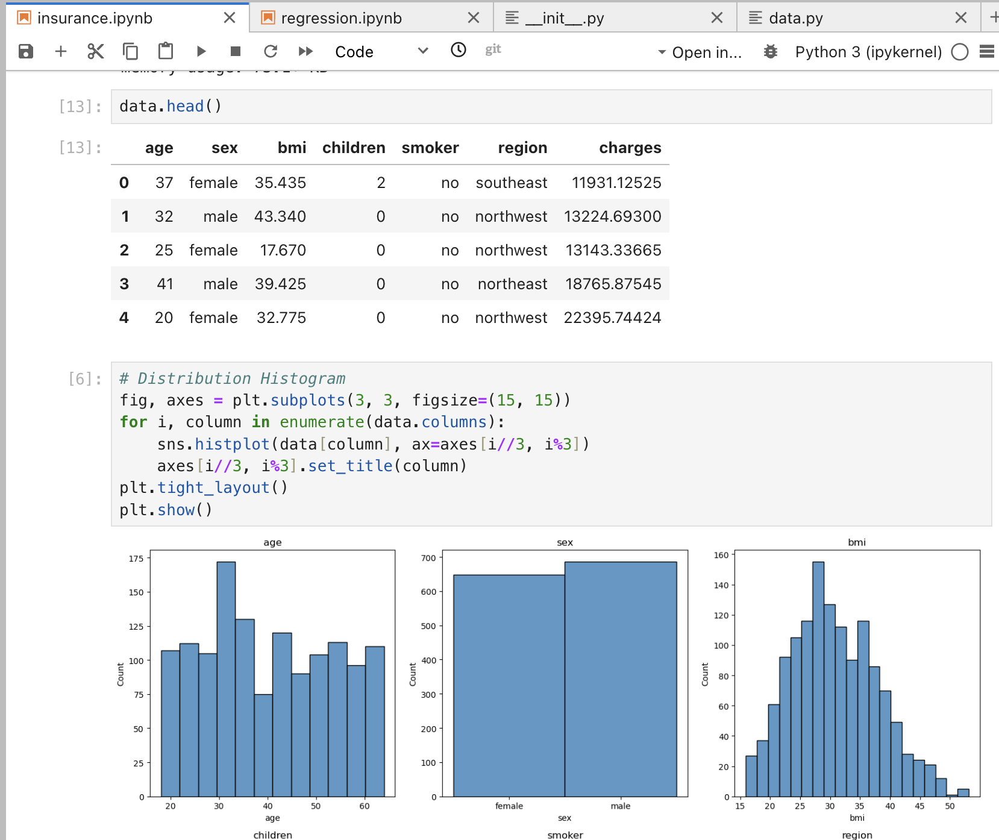
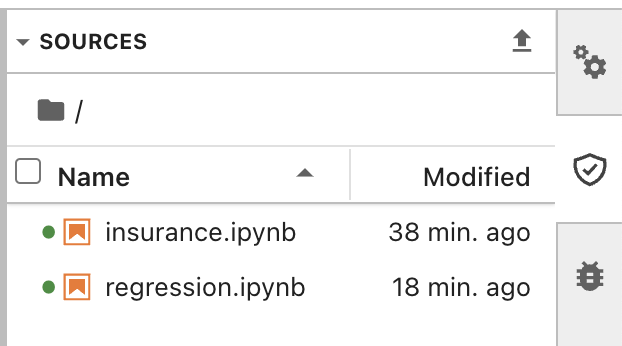
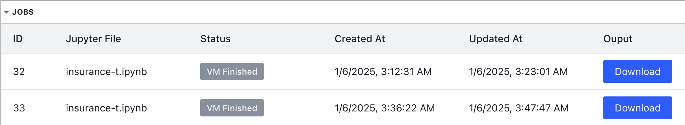

Tutorials
In this tutorial, we show the following scenario:
- Dataset: US Health Insurance Dataset from Kaggle
- Task: Train a model predicting the insurance charge based on the data (use XGBoost regression)
- Data Provisioning: MST (2018 NIST snythetic data challenge winner).
The tutorial uses Google Confidential Space as the TEE backend, and uses preprocessed datasets.
Overal Workflow
This tutorial uses a very simple prototype data SDK to interact with two different versions of datasets as shown below.

Overall ManaTEE Architecture and Demo Workflow
.
├── insurance.ipynb
├── regression.ipynb
├── data
│ ├── insurance.csv.s1
│ └── insurance.csv.s2
└── sdk
├── __init__.py
├── __version__.py
└── data.py
Data Provisioning
As mentioned earlier, data provisioning currently needs to be done manually by the data owner. In summary, the data owner needs to: (1) Use proper techniques to generate stage-1 dataset from the original (stage-2) dataset; (2) Upload two different data versions to the cloud; and (3) Use proper access control mechanism to both of the data versions.
We've already preprocessed stage-1 data using NIST-MST differentially-private synthetic data generation. Thus, the tutorial starts from (2).
To provision data, first, prepare google cloud storage (GCS) buckets.
You can also run
tutorial.shinstead of following the instructions below. Make sure to modify the top of the script to replace variables.
Create two buckets (replace <your-stage-N-bucket> with unique strings you'd like)
gcloud storage buckets create gs://$STAGE_1_BUCKET
gcloud storage buckets create gs://$STAGE_2_BUCKET
Then, upload datasets into the bucket:
gcloud storage cp data/stage1/insurance.csv gs://$STAGE_1_BUCKET
gcloud storage cp data/stage2/insurance.csv gs://$STAGE_2_BUCKET
Data Permissions
Now, let's use a proper access control mechanism to both of the datasets. In the demo, attestation is used only for checking the integrity of the workload and its output. Thus, we omit encryption and attestation policy check based on image hash in this tutorial. However, it does not mean that ManaTEE limits how the data provider should leverage the attestation policy.
Stage-1 Permission
Give the JupyterLab single-user instance a permission to access stage-1 data. Replace <your-project-id> with your GCP project ID.
gcloud storage buckets add-iam-policy-binding gs://$STAGE_1_BUCKET \
--member=serviceAccount:jupyter-k8s-pod-sa@$PROJECT_ID.iam.gserviceaccount.com \
--role=roles/storage.objectViewer \
Stage-2 Permission
Now, let's give the TEE instance a permission to access stage-2 data.
First, create a service account that will be used by the TEE instance. Replace <your-service-account-name> with a unique string you want to use for the service account.
Give the service account access to the bucket.
gcloud storage buckets add-iam-policy-binding gs://$STAGE_2_BUCKET \
--member=serviceAccount:$TEE_SERVICE_ACCOUNT@$PROJECT_ID.iam.gserviceaccount.com \
--role=roles/storage.objectViewer
Now, we are going to use Google Confidential Space's token to make TEE impersonate the service account.
First, create a workload identity pool. Replace <your-pool-name> with a unique string you want to use as a workload identity pool name.
Then, grant the service account permission to impersonate the workload identity pool.
gcloud iam service-accounts add-iam-policy-binding \
$TEE_SERVICE_ACCOUNT@$PROJECT_ID.iam.gserviceaccount.com \
--member="principalSet://iam.googleapis.com/projects/"$(gcloud projects describe $PROJECT_ID \
--format="value(projectNumber)")"/locations/global/workloadIdentityPools/$WORKLOAD_IDENTITY_POOL_NAME/*" \
--role=roles/iam.workloadIdentityUser
Finally, create a workload identity pool provider.
gcloud iam workload-identity-pools providers create-oidc attestation-verifier \
--location=global \
--workload-identity-pool=$WORKLOAD_IDENTITY_POOL_NAME \
--issuer-uri="https://confidentialcomputing.googleapis.com/" \
--allowed-audiences="https://sts.googleapis.com" \
--attribute-mapping="google.subject=\"gcpcs::\"+assertion.submods.container.image_digest+\"::\"+assertion.submods.gce.project_number+\"::\"+assertion.submods.gce.instance_id" \
--attribute-condition="assertion.swname == 'CONFIDENTIAL_SPACE' && 'STABLE' in assertion.submods.confidential_space.support_attributes"
Job Submission
Prepare Jupyter Environment
Now, a JupyterHub user can use the notebook interface to write a script and submit it to the API via a JupyterLab extension called jupyerlab-manatee.
The extension is already installed in the deployed Jupyter Hub single-user image.
Please go to tutorials directory, and upload the code directory into the JupyterLab environment.
Upload the code.zip to the JupyterLab interface.
Then, unzip it by running the following cell in the notebook

Stage-1: Programming
Open insurance.ipynb. Replace the following line with a proper variables and bucket names that you used when provisioning the data.
sdk.gcp.init("<your gcp project ID>", "<your workload identity pool name>","<your TEE service account name>")
repo = sdk.DataRepo("gs://<your stage-1 bucket>", "gs://<your stage-2 bucket>")
raw = repo.get_data("insurance.csv")
data = pandas.read_csv(io.StringIO(raw))
When you run the cells, you will be able to see the stage-1 data getting fetched and processed. You can change the code to furthre explore the dataset.

Stage-2: Secure Execution
When ready, the user can use the ManaTEE extension to submit a job to the ManaTEE API. The API address is determined at the deployment, and passed through as an environment variable. You can access the extension by pressing the shield button on the side ().

Select the file and press upload button ().
This will create an entry in the "Jobs" tab, which will take some time to build and run.
Once the job is completed, you can download the output by pressing "Output" button, or see the attestation token by pressing "Access Report" button.

Try to run both of "insurance.ipynb" and "regression.ipynb", both in the programming stage, and by submitting to the secure execution stage.